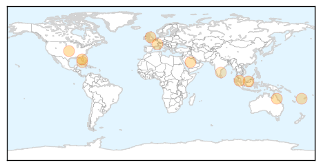

30 Day Trends
Web: 3 alerts, 0 warnings
Twitter: 0 alerts, 0 warnings
Top Articles:
- 0.997
- Fighting to break the dengue cycle - Nation
- 0.993
- Which ‘Neglected’ Illnesses And Infections Top WHO’s List?
- 0.993
- 86 people struck down with crippling Ross River virus
- 0.986
- Fighting to break the dengue cycle, Others news, Health News, AsiaOne YourHealth
- 0.982
- Mosquito Viruses Are a Biting Concern for Snowbirds
- 0.947
- Cong. Lilia Nuño lauds city health execs for anti-dengue drive success
- 0.914
- Climate change could increase the spread of tropical diseases
- 0.907
- FBC News
- 0.898
- WHO Urges Billions to Fight Neglected Tropical Diseases — Naharnet
- 0.825
- Growing mosquito threat calls for mutant measures
- 0.746
- Mosquito threat persists, yet no entomologists
Top Tweets:
- 0.680
- Flavivirus news: Paper Test Quickly Detects Ebola Dengue and Yellow Fever - Scientific America... http://t.co/6Par1byJgN pathogenposse
Web/News Articles

Tweets

Article Locations
Article Confidences